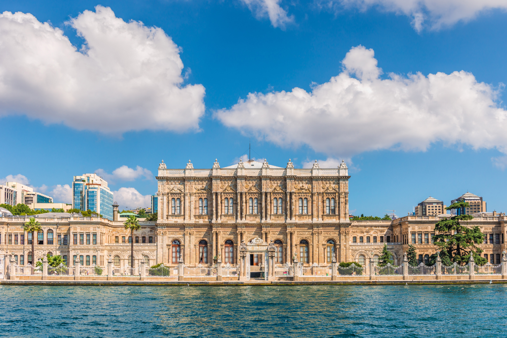

Dolmabahçe Palace
Dolmabahçe Palace located in the Beşiktaş district of Istanbul, Turkey, on the European coast of the Bosporus strait, served as the main administrative center of the Ottoman Empire from 1856 to 1887 and from 1909 to 1922 (Yıldız Palace was used in the interim period).
The palace was built by Sultan Abdülmecid I between 1843 and 1856, at a cost of five million Ottoman gold pounds, the equivalent of 35 tons of gold. The design contains eclectic elements from the Baroque, Rococo, Neoclassical, and traditional Ottoman architecture, making it one of the most glamorous palaces in the world.
It has 285 rooms, 44 halls, 68 toilets, and 6 baths. The palace is also home to the world's largest Bohemian crystal chandelier, a gift from Queen Victoria, and the famous Hereke carpets.
The palace was the administrative center of the Ottoman Empire for 30 years, from 1856 to 1887, and was the residence of six sultans. Mustafa Kemal Atatürk, the founder and first President of the Republic of Turkey, used the palace as a presidential residence during the summers and enacted some of his most important works here.
It is open to the public as a museum, with guided tours available in Turkish and English. The palace is a must-see for history buffs and architecture enthusiasts.